Para representar un grafo se puede utilizar una matriz o un conjunto de listas, ambos llamados de adyacencia. Esta representación sirve para identificar la conexión que existe entre los nodos y así poder identificar si hay uno o varios caminos de un nodo a otro.
Matriz de adyacencia
Es una matriz que representa la conexión entre un par de vértices, será una matriz cuadrada de n x n, es decir, en las columnas y filas aparecerán los identificadores de cada vértice, por lo que, si queremos representar un grafo simple, entonces se dice que la matriz es binaria, donde el uno representa que hay una arista que une dos nodos y el cero que no hay arista. En caso de que el grafo sea ponderado entonces en la matriz aparecerán los pesos de las aristas que unen nodos.
Si el grafo es no dirigido, entonces se va a crear una matriz simétrica, donde abajo y arriba de la diagonal principal aparecerán los mismos datos, dicho de otra forma, se mostrarán las conexiones bidireccionales entre los nodos.
En caso de que el grafo sea dirigido y no ponderado, entonces, aparecerá un uno indicando que un nodo tiene conexión con otro nodo, pero no viceversa.
Esta estructura tiene como ventaja que la construcción de dicha representación y las operaciones sobre la misma se implementan de forma muy sencilla y el acceso a algún dato también se realiza con facilidad. Sin embargo, tiene el inconveniente que el número de vértices del grafo no puede cambiar y si hay muchos vértices y pocas aristas (a << n2) no se hace un uso eficiente de la memoria ya que se obtiene una matriz escasa.
Como se menciono anteriormente, la representación de un grafo mediante una matriz de adyacencia es una técnica muy eficiente, veamos cómo construirla a partir de un Grafo No Dirigido. En la siguiente figura, se puede observar un grafo consistente en 4 (n) vértices (a,b,c,d).
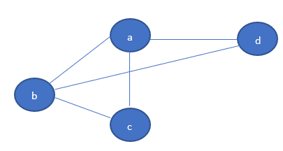
El primer paso, consiste en construir una matriz de n x n, siendo n el número de vértices totales del grafo, en el ejemplo, la cantidad de vértices es 4, por lo que la matriz correspondiente será de 4 filas x 4 columnas y además cuenta con la propiedad de ser simétrica, para indicar que existe una adyacencia, es decir una arista del vértice vi al vértice vj, se deberá colocar un número 1 y un número 0 en otro caso, esto es:
Sea |V| = n y V = {v1 … vn}, la matriz de adyacencia será una matriz de tamaño n x n, o sea |V| x |V|, donde cada arista será:
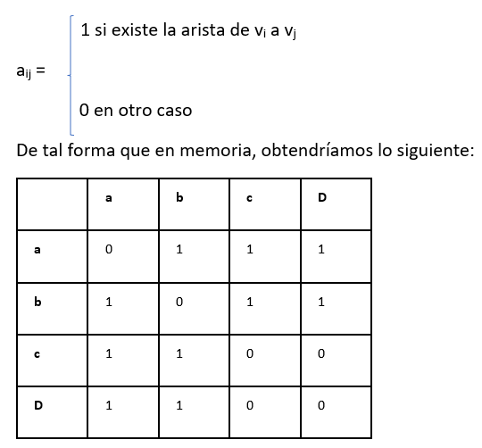
En esta representación tendremos que reservar al menos n2 espacios de memoria para la información de las aristas y las operaciones relacionadas con el grafo implicarán, habitualmente, recorrer toda la matriz, con lo que el orden de las operaciones será, en el peor de los casos, cuadrático.
Para representar mediante una matriz de adyacencia un grafo dirigido como el que se muestra a continuación:
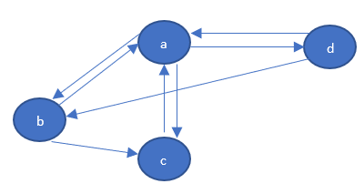
Se seguiría el mismo procedimiento que con un grafo no dirigido, con la diferencia de que la adyacencia se indica sólo cuando un vértice tenga dirección o sentido hacia otro. En el ejemplo a continuación, en la matriz se llena la casilla correspondiente a la arista que va del vértice d al b y no del vértice b al d, obteniendo una matriz asimétrica.
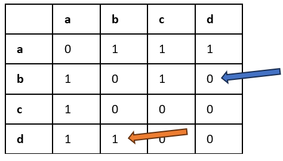
En el caso que el grafo además estuviera ponderado, como en el ejemplo siguiente:
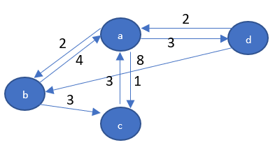
Se seguiría el mismo procedimiento de construcción de la matriz y dentro de las casillas se incluye la ponderación. En el caso de no existir adyacencia, por convención se indica un valor muy grande ya que se busca que no coincida con ningún posible valor en las aristas del grafo.
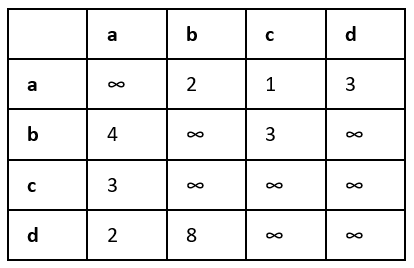
Lista de Adyacencia
Como se comento anteriormente, una Matriz de Adyacencia tiene como desventaja la deficiente administración de la memoria y el poco dinamismo que existe si se requieren agregar más vértices, por esta razón, se puede aprovechar la estructura de datos lista enlazada ya que ofrece una solución dinámica y eficiente en lo que respecta a manejo de memoria. A través de una lista enlazada, se puede crear un vector dinámico que indexe los vértices y almacenar a su vez las aristas en listas dinámicas, veamos su implementación.
A continuación, tenemos un grafo consistente en 4 (n) vértices (a,b,c,d).
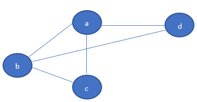
El primer paso para la implementación consiste en construir un arreglo de listas enlazadas, una para cada vértice, lo que significa que se deba reservar memoria para los n vértices del grafo y cada nodo de la lista debe permitir a su vez almacenar las aristas correspondientes, es decir, la lista correspondiente al vértice v, contiene todos los vértices adyacentes a él.
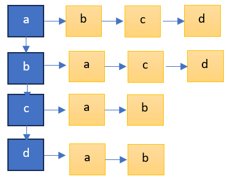
Veamos el caso de un grafo dirigido como el de la siguiente figura:
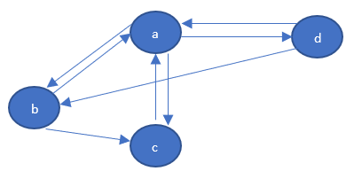
Al comparar la lista de adyacencia con la correspondiente matriz de adyacencia, se observa que en el caso de la lista, únicamente se reserva la memoria para las aristas que tengan correspondencia entre vértices.
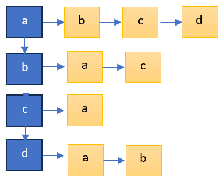
En contraposición, en la matriz de adyacencia vemos que, aunque no se utilice la referencia, es decir, no existan aristas que conecten algunos vértices, los espacios en memoria si deben ser reservados, por lo que como mencionamos anteriormente, en el caso de un grafo con un gran número de vértices, si se tienen pocas conexiones, se estarán reservando localidades de memoria que nunca estarán en uso. Observa la matriz para que puedas dimensionar esto.
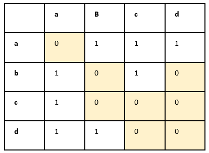
Finalmente, si se desea representar un grafo etiquetado o ponderado, como el siguiente:
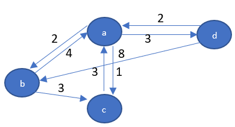
La correspondiente lista de adyacencia deberá almacenar en cada referencia, la ponderación o etiqueta de la arista como se muestra a continuación.
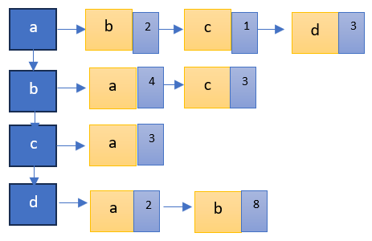
Un aspecto muy importante de la estructura tipo grafo es que, a partir de la misma, nos podemos plantear el problema; ¿qué otros vértices del grafo son alcanzables desde cierto vértice? Dar respuesta a esta pregunta puede llevarnos a dos tipos de implementaciones: Recorrido y Búsqueda.
El recorrido de un grafo consiste en que partir de un vértice dado y visitar todos los vértices restantes de manera ordenada y sistemática, moviéndose por las aristas. El recorrido se aplica para grafos dirigidos y no dirigidos.
El problema de búsqueda en un grafo consiste en buscar un elemento (vértice) que cumpla una determinada condición dentro de un conjunto de posibilidades (aristas) dado, lo que se puede denominar “espacio de búsqueda” (todos los vértices del grafo). Esto se puede expresar más formalmente como: Dado un grafo G, un vértice inicial v1 y un vértice final vf, una búsqueda consiste en la exploración a través de las aristas en el grafo partiendo de v1, para encontrar todos los vértices en G para los cuales hay una ruta a partir de v1 hasta vf.
La búsqueda de una ruta entre dos vértices considera la posibilidad de encontrar un camino que conecte dichos vértices, en algunos problemas el propósito también es encontrar la ruta con el menor costo posible entre dos puntos dados. Entre los algoritmos para resolver estos problemas, se encuentran Búsqueda en Amplitud, Búsqueda en Profundidad y Dijkstra.
Imaginemos el caso en el que se tienen algunos pueblos colindantes en alguna región, estos pueblos se encuentran conectados a través de caminos por los cuales se pueden transitar entre ellos. En ocasiones se necesita a partir de un pueblo en específico ir en busca de otro, y no se cuenta con más información al respecto. En este tipo de problema se puede explorar a ciegas los caminos sistemáticamente siguiendo un orden o una estrategia hasta que se llegue al pueblo deseado, llevando en el proceso el registro de los pueblos visitados para evitar regresar y dar vueltas en circulo. Este problema se puede resolver empleando Grafos y los dos tipos de búsqueda:
- Búsqueda en amplitud
- Búsqueda en profundidad
En las siguientes secciones se describen estos algoritmos.